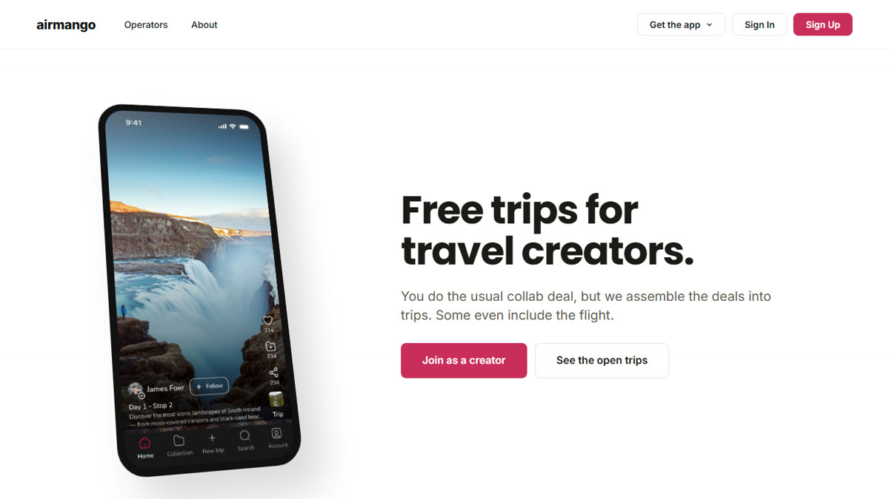
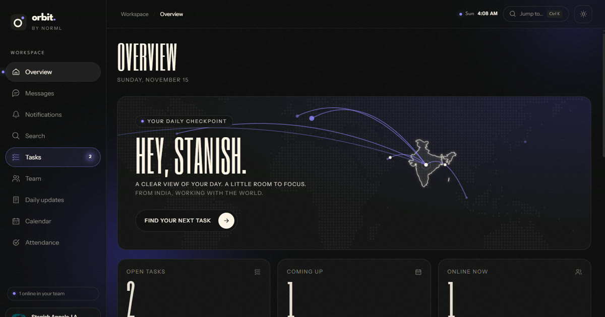

02 / Development
From schema to Play Store. end to end
Java and Spring Boot backends, Struts/JSP enterprise code, Supabase PWAs, Android releases and on-premise AI. Built for production, not demos.
Airmango
Software Developer (Contract), remote. Sep 2026 to Oct 2026. A travel platform for iOS, Android and the web where creators turn trip photos and videos into bookable trips.

- Mobile app: built and improved trip creation, the feed, sharing, collections and creator profiles in the React Native (Expo) app.
- AI trip import: photo-to-trip import with Google Gemini vision that groups photos into stops, names places, filters out screenshots and repeats, and drafts descriptions.
- Voice import: a creator describes a trip out loud and the app fills in the stops from the recording.
- Free Trips program: built end to end, from database tables, server functions and scheduled rounds to push notifications, emails and admin review screens.
- Operator brand check: automated scoring report for tour operators from their reviews and Instagram data, collected through Apify.
- Instagram + payments: Instagram login and post import via the Graph API (including Meta app review prep), and embedded Stripe checkout for operators.
- Admin panel: gig catalogue, Travel Architect review table, Instagram profile previews and the trip builder.
- Reliability: fixed data-loss bugs like unsaved trip edits and silently failing messages, and tested Android staging releases across screens, text sizes and permission states.
Orbit
Norml's in-house workspace app, built and shipped by me. Started life as NetRunner, now renamed Orbit and used daily by the team.

- One workspace: overview, messages, notifications, tasks, team, daily updates, calendar and attendance in a single installable PWA.
- Live by default: Supabase realtime for chat, presence ("who's online") and task counts, so nobody has to refresh.
- Daily checkpoint: a personal overview with open tasks, what's coming up and who is online, built around how the team actually starts its day.
- Fast to move around: Ctrl K jump-to search across the app, plus light and dark themes.
- Shipped and evolved: launched as NetRunner, then rebranded to Orbit and moved onto its own production database and domain.
Docuventa DMS
Greenbooks Imaging. Document management for government clients.
- Helped build an AI document chatbot: users ask questions in plain language and get answers grounded in their own indexed documents.
- Built console modules, appointment and document booking workflows, and REST endpoints consumed by the field mobile app.
- Worked on document comparison tooling and biometric authentication for secure access.
- Bug fixing, regression testing and production debugging for live government deployments.
KYC Document Classifier
Sorts identity and financial documents with zero data leaving the network.
# sample run: merged 38-page scan, 3 people split ID change at p.9, p.21 3 bundles match vector memory (ChromaDB) 31 / 38 hits vision fallback on 7 pages llava, local sort Aadhaar 6 · PAN 5 · Bank 19 · Land 8 review 2 flagged, human confirmed learn corrections stored memory +2 # checkpoint saved. nothing left the LAN.
- Learns from every human correction and keeps confirmed classifications permanently.
- Auto-splits merged multi-document PDFs per document type and per person by detecting ID-number changes.
- Visual review panel, full-text and ID search, crash-safe checkpointed processing.
Prakasha MCQ
Learning app built and released end to end.
- Multiple test modes, chapter-wise bookmarks, mistake review, in-app credits and error reporting.
- Google Sign-In with an OAuth2 server flow and deep-link auto login.
- Owned the release pipeline: branding, deep-link scheme, Gradle signing and versioned AAB builds for Google Play.
Learning Platform
Production LMS behind the app: 26,000+ questions across 82 tests.
- Dockerized on Ubuntu with nginx and Cloudflare TLS, then migrated live across VMs with zero data loss.
- Custom PHP plugin exposing REST services for bookmarks, mistake tracking and auth.
- Python pipelines using vision LLMs to turn scanned textbooks into tagged question banks in English, Hindi and Tamil.
 Under the hood
Under the hoodMore I'veshipped
Apps and side builds
Certified